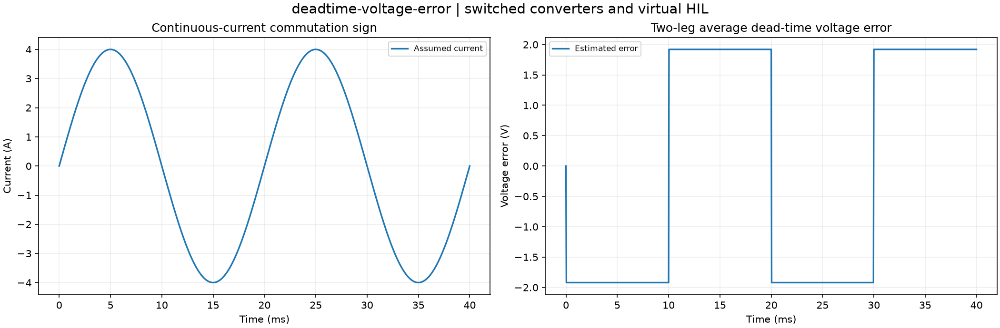

Reproducible switched converters and virtual HIL. Units and field components are printed on the scientific axes. peak d-q quantities use exp(+i omega t); terminal currents point into the protected line.
Sealed numeric archive | Summary CSV | Physical parameters | Run request | Source and environment

| peak_error_v | 1.9200000000000002 |
|---|
These are simulations, not hardware measurements. Network-model, measurement, timing and statistical uncertainty require distinct convergence checks. Singular or unilluminated data use explicit masks.
Source revision: e37760b740c42b9052fd24c1a442a5d305f0001f.
Dirty checkout: False.
Configuration SHA-256: c6f800273f205396d2ffe080fd71fe2ac72fba2d22df5b45b97f7244191748d0.
Replay preserves original source and parameter provenance. SHA-256 manifests detect changed bytes; they are unsigned integrity records, not certificates of physical validity.